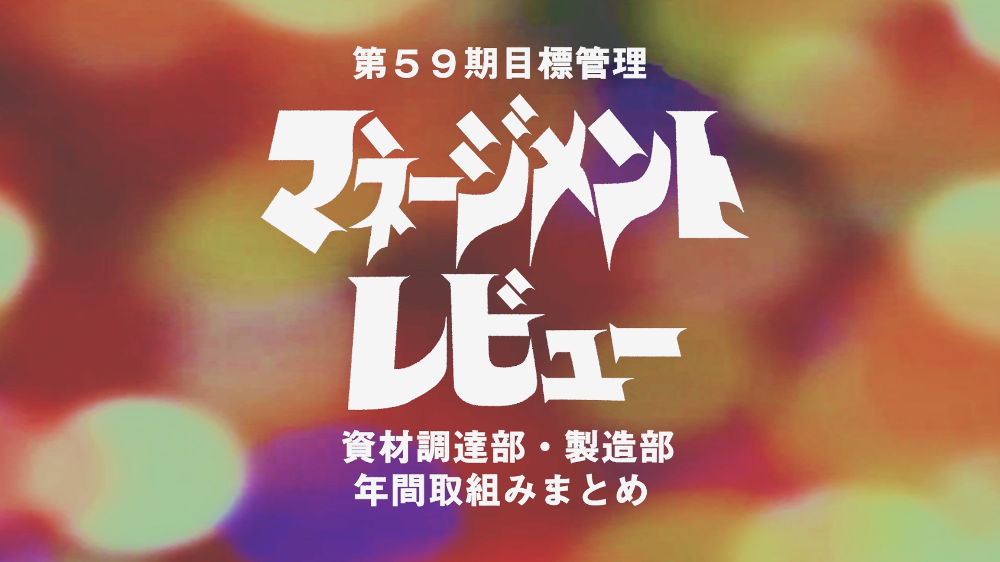
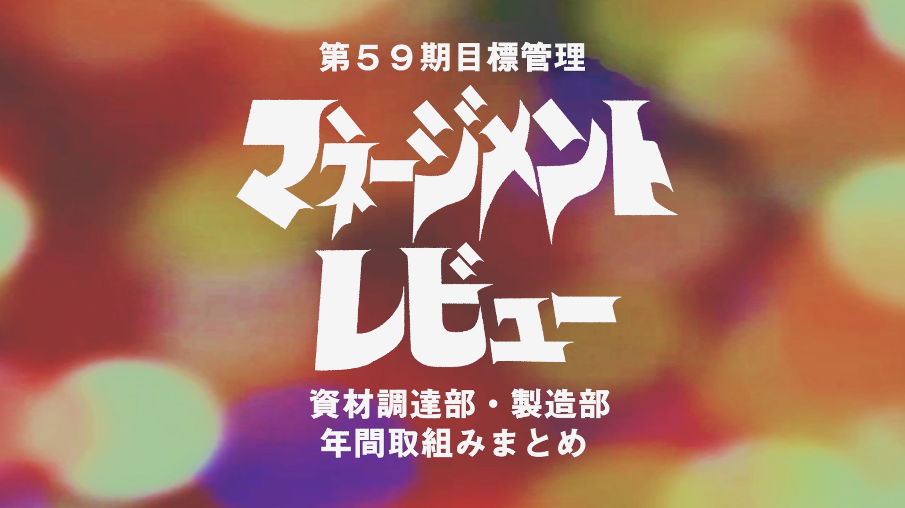

商品試食用POP作成
ターゲット
お土産屋さんを訪れる観光客
製作について
学生時代、当時アルバイトをしていた中華街のお土産屋さんのお菓子の試食用にPOPを作成した。
それぞれ商品のパッケージのデザインから着想を得て、限られたスペース内で手に取る人に何の試食なのかを伝えるとともに、商品自体にも興味を持ってもらえるよう意識して製作した。

お土産屋さんを訪れる観光客
学生時代、当時アルバイトをしていた中華街のお土産屋さんのお菓子の試食用にPOPを作成した。
それぞれ商品のパッケージのデザインから着想を得て、限られたスペース内で手に取る人に何の試食なのかを伝えるとともに、商品自体にも興味を持ってもらえるよう意識して製作した。